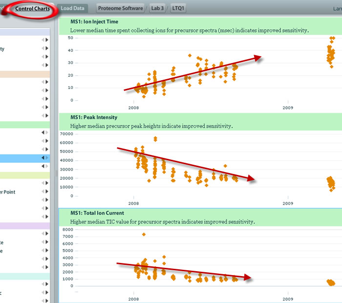

As we have seen here previously, out of range metrics can alert you to an acute problem or show you a gradual trend. Often, ion optics get dirty and this results in a long term degradation in signal. Likewise, as an LC column wears out, the separation power may decrease and you may see issues with resolution or tailing . And because LC-MS systems are made up of many circuits and electronic devices, it is not unreasonable to assume that these things can wear out.
In this case, we see that over the course of a year, the following MS1 metrics gradually change. The change can be so subtle that the technician may not notice them in his/her day to day monitoring of the instrument. This is another great reason to add a tool such as MassQC to your toolkit in order to produce the best possible data.
Notice the strong correlation of the following metrics when viewed from the Control Charts :

In this example there is a general decrease in the MS signal received by the mass spectrometer in the MS1 scan over a period of several months. The MS1 Ion Inject Time increases and the MS1 Peak Intensity and MS1 Total Ion Current both decrease.
This is likely showing the effects of an aging electron multiplier over the period of several months. This part needs to be replaced relatively frequently in this particular class of instrument due to normal wear and tear, which causes a decrease in its sensitivit y. This is a nice example of how the software may help indicate that it’s time for periodic maintenance.